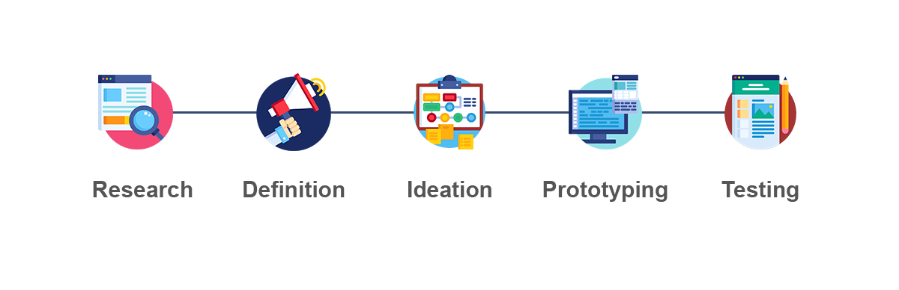

.png)
Brief Process:
This case study was constructed to improve the layout of the current Atlanta Solidarity Fund website by using a five step design process. This project placed an emphasis on UI styling and High-Fidelity Prototyping as we wanted to show how we could visually improve the site so users could find the information they were searching for.
My team consisted of three other designers, however I led the project.
My Role:
UX Researcher, UX Designer, UI Designer
Tools Used:Figma, Photoshop, Miro
Design Process
The design thinking process is iterative, flexible, and focused on collaboration between designers and users.


Moving into the features, we did not have to spend much time here. With the main features of donating and receiving financial help being already in place in the current website, we still wanted to go through the process to get an overall idea of how users could perceive the organization and what they offer.
This also helped us stay on track on the main features, and not overcomplicate parts of the website that were not as important.


In our Storyboard, we show the emotions and journey goes through in a more precises and visual representation. The storyboard, along with our previous research, allowed us to better understand the frustrations and feelings of success our user could potetionally go through when using the service.
Having this insight to incorporate into our design and layout proves to be very valuable in the future of our design process.
.PNG)
.PNG)

Moving into the Hi-Fidelity prototype, we started by pulling images to build our Style Guide. We compiled everything from typography, logos, and color paletts into a Style Tile to reference when building the Hi-Fidelity prototypes.
A lot of the creative features we settled on were heavily influenced by the current style of the organization. We kept the logo as is, with the primary color staying the same as well. Everything else was built from a feeling of power and boldness to relate to the mission of the Atlanta Solidarity Fund.